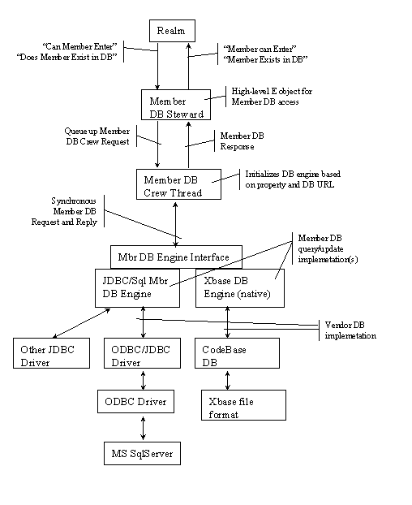
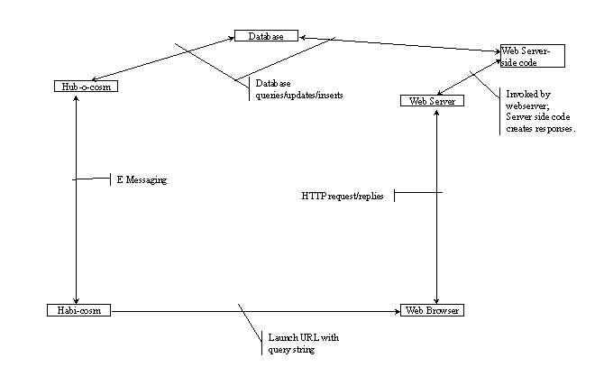
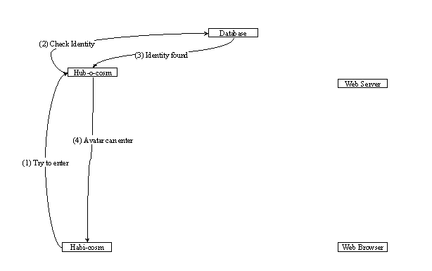

After speaking with Randy in June 2023 during the initial checkin of Electric Communities assets, he asked that I go through the r167 beta disk to identify services that need to be proxied and which configurations launch which worlds.
I initially filed this as a GitHub issue but have condensed it into one page for the hack day. This initial part provides an overview of what at the time I felt was the most important stuff to know.
The most important things are:
These are the default/normal configuration on the beta disk and will choose your default avatar, realm that you log into, point to the file that I believe is an autogenerated unique identifier used to register you with the EC Habitats member directory and finally, list the URL used to connect to what would've been the LDAP service.
By default, you enter the realm called Change Room (aka the hatchery). This is self contained and has an exit to the Beach Town area, or to your turf if you create one.
fiat-lux.communities.com:1670
This was the PLS server which you ran.
http://vega.communities.com/scripts/addavatar.asp - Called in "props/hubjdbc.props". Seems to register your avatar with a remote members database.
http://elsinore.communities.com/EC-reg/ Unknown what this was for, but it's called in "hubconsole.props". Seems like it's related to a members database.
Something called Receptionist listens on port 49438 when you log in and the client publishes the teleport pads of the Realm you enter as mcm files in your local publishedRefs folder.
To manually switch between realms, whilst logged out, modify `props/run.props` and edit the value for `RealmTextFile` to either `realm/realm.ChangeRoom.txt`, `realm/realm.BeachTown.txt` or `realm/realm.TheCity.txt`. Repeat the process by modifying `props/default.props` and modifying the `RealmTextFile` there too.
This is a session where I logged in as an avatar where my default realm was the BeachTown realm.
Receptionist listening on port# 49438 Publishing Beach's teleport pad as Beach.mcm Publishing Mountain Villa's teleport pad as Mountain-Villa.mcm Publishing Beach Town Theater's teleport pad as Beach-Town-Theater.mcm Publishing Lighthouse's teleport pad as Lighthouse.mcm" ec.e.net.EConnectionRecordException: Connection startup with oaov2rywnl8tx8c44r84of1snugxjq4 encountered the following problems: fiat-lux.communities.com:1670: java.net.NoRouteToHostException: Operation timed out null: ec.e.net.EConnectionAttemptFailed: search path exhausted
All of the URL's listed above exist in the CVS archive except for http://elsinore.communities.com/EC-reg/
In order to get two clients talking to each other, one of them needs to know the address of the other one so it can make contact. In the E (language) world, those addresses are known as SturdyRefs and the human readable version of them is called an EARL ("E absolute reference locator").
This means that if you're running a client and you want to enter a region hosted by some server somewhere, you need to supply the SturdyRef of the destination region to your client. You could just type in the EARL (the readable form of the SturdyRef) by hand, but since they're a bit more complex than a typical URL that's fairly inconvenient. For example, an EARL might look like this:
e://fiat-lux.communities.com:1670/g326zj926wqigclmgldpaakav6gctlr/wqtd7
The avatar directory is a mechanism for hub members to contact other registered members of the hub. Currently, the avatar directory lists "avatars" and the user name associated with that avatar.
The Hub Member DB is a database wrapper which provides high level access to a database schema implemented using an off-the-shelf database product. The highlevel wrapper api provides asynchronous access to the MemberDB schema using E objects, and provides a mechanism for the realm to verify that a given avatar identity exists in the member db, and the identity is allowed to enter the realm. In addition, there is a web based "avatar registration" mechanism for hub users to add their avatars to the member database.
It's been mentioned that to get EC Habitats working again with multiple users, that we'd need to stand up an LDAP server to get things going. Based on reading the notes in the archive, it looks to me like LDAP was used later on once development on EC Habitats had stopped and EC-ID/Palace/etc became the focus instead.
The following sections from now until the end of this document contain snippets from the EC Habitat source that may or not be relevant to our hack day efforts.
r167 has a special purpose limited avatar directory using sqlserver
The current implementation using the SqlServer DB and an ASP is also very much off-the-shelf. Though maybe more lightweight than an LDAP approach, the current approach suffers from not being general enough. E.g., we can't easily use it for Turf Directories.
The Hub Member DB is a database wrapper which provides high level access to a database schema implemented using an off-the-shelf database product.
The member db architecture is designed to support multiple underlying database engines. Two are supported: CodeBase (a flat-file xbase compatible db engine on windows) and JDBC. For the JDBC implementation, SqlServer is currently supported, however the JDBC SQL code is generic enough to support other RDBMS. On the JDBC side, the JDK provided JDBC/ODBC bridge is used. Again, other JDBC drivers should work, the only change required is a property that specifies the driver and database URL.
The following diagram shows the components and message flows between the Realm una and the underlying database implementation. (Note: This is a draft picture; there is some simplification.)
The other item worth mentioning at this level is the relationship between the hub, habi*, and the web. This is shown in the following diagram.
The following diagram depicts the process data flow that occurs when an avatar is registered with the MemberDB and tries to enter the world. The Avatar identity is found in the Member DB, and the avatar can enter the world.
Another important aspect of the hub member db is its use of the off-the-shelf database component. The current implementation supports Sequiter CodeBase and MS SqlServer. Other SQL RDBMSs should work; its just a matter of defining the MemberDB schema, and any neccessary stored procedures. The difference between these two DB engines is cost, flexibility, and ease-of-integration. CodeBase is no-royalty and made sense for the "hub" application we were productizing. However, CodeBase is not relational, its difficult to define a multi-table schema, and CodeBase doesn't easily integrate with other web applications. ('C' CGI is the only way to talk to it.) SqlServer carries a hefty price tag, but intregates easily with the java based hub code using JDBC and other web applications. For example, on the MS IIS web server, Active Server Pages directly support Active Data Objects which provide access to ODBC data sources. (Note: CodeBase was the first DB engine to get integrated. Its possible that the higher level implementation has drifted a bit, which require some adjustment to the CodeBase wrapper.)
MS SqlServer DB
* Tables
* Acct - holds the basic account info: Login, Password, email addr
* Persons - holds information about the acct holder: Name, real address, phone, etc
* Identities - avatars that have registered and are members of the hub
* NewIdentities - a holding area for identities that are attempting to register
* FailUrls - a small table containing URLs. When an avatar entry fails, one of these URLs is sent back to the user. The failure URL is specified by avatar in the Identities table.
* Unique Keys and Foreign Keys
* The Acct table specifies an auto generated unique key for each acct record. This key is used as a foreign key in the Persons and Identities tables.
* Relationships
* Acct -> Persons : One to One
* Acct -> Identities : One to Many
* Identities -> FailUrls: Many to One
Which directories on our tree does this subsystem cover?
* src/hub
* src/hub/dbengines
* hub/dbengines/jdbc
* hub/dbengines/jdbc/crew
* hub/dbengines/jdbc/compute
* hub/dbengines/xbasedb
* hub/dbengines/xbasedb/crew
* hub/dbengines/xbasedb/compute
* hub/dbengines/testdb
* hub/dbengines/testdb/crew
* src/hub/mbrdb
* hub/mbrdb/crew
* hub/mbrdb/steward
* hub/mbrdb/testers
* hub/mbrdb/compute
* hub/mbrdb/tools
* hub/mbrdb/server
It also seems like we need to setup a machine as an EC Habitats Hub. This appears to be running a standard EC Habitats client installed to the default location of c:\program files\EC Habitats, then you run `/hubconfig/hubsetup.bat`. There is more configuration involved, but from a guess, it seems to generate a service.props file, starts a service based on one of the pre-existing realm batch files, and generates .mcm files which get uploaded to a web server.
My assumption is that the mcm file generated by the hubsetup batch file would've been the main mcm file on the communities.com server, so for example if you ran the Beach realm hub file, it'd setup a Beach realm instance and you would publish the .mcm file for it to the main site and anyone connecting to it from then on would connect to your hub client.
It appears that you also need to run a PLS server, which can also be found in `/hubconfig/hubsetup.bat` and this is what `fiat-lux.communities.com:1670` was and the main thing the EC Habitats client tries to connect to when clicking on a link to another realm.
Return to the index